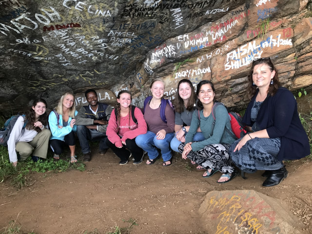
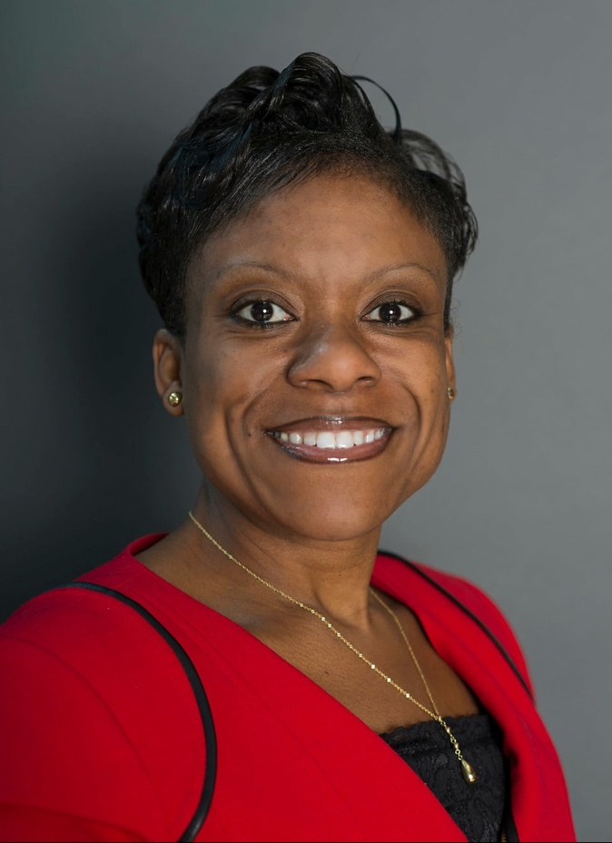

Past Member Spotlights
Jessica N. Lee
Jessica N. Lee (jessicalee1logn@gmail.com) is the sole special education teacher and case manager in an international k-12 school in Umm al Quwain, United Arab Emirates, a position she has held since August, 2018. In this position, she designs learning interventions for students needing equitable special education services as well as for students referred for learning support services using the RtI model. Jessica also leads teacher-centered professional development on the provision of inclusive practices for students who need them and collaborates with teachers on inclusive and best practices for students with varying differences.
Prior to this position Jessica was a special education teacher for English and literature in Pennsylvania (William Penn School District and Delaware Valley Charter High School). She received her B.A. in History and M.A. in Secondary Education with certifications in English and Special Education from Chestnut Hill College in Philadelphia. She also holds a graduate certificate in Mind, Brain, and Teaching from Johns Hopkins University.
Jessica’s previous research interests were about the transitional nature of education, one of the factors leading her to the UAE. She now studies neuroeducation and hopes to apply neuroscience research to educational practices and organizations. Her most memorable experiences in the U.A.E. are those involving the resourcefulness of her bilingual students wanting to learn and their parents welcoming her into their homes via virtual learning during COVID-19.

Dr. Nicole DeClouette
Dr. Nicole DeClouette (nicole.declouette@gcsu.edu) is a special education professor at Georgia College and State University in Milledgeville, Georgia. She has worked in Tanzania for the last four years (since 2016) establishing partnerships with schools and community centers in Lushoto and Arusha to establish a Tanzania study abroad program for her university students. Dr. DeClouette works with Sebastian Kolowa University that is known for training special education teachers. In July, 2020 she will be taking a 4th group of students: 1) to study East African geography, culture and language (Swahili), 2) to observe and volunteer at local schools and community centers serving individuals with disabilities and 3) to explore Masai culture and their cultural understanding of disability translated into teaching practices and community inclusion/exclusion.


Dr. Marisa Macy
Dr. Marisa Macy (Marisa.Macy@ucf.edu) teaches early childhood classes and is a researcher in special education at the University of Central Florida. She does research related to young children with disabilities and is the co-director of the early childhood abroad experience in Germany. Dr. Macy has had international experience with the Fulbright Council for International Exchange of Scholars and currently with UNESCO. She helped write a position statement with a UNICEF team to address the needs of young children with disabilities around the world. Her particular research interests are international research on the early identification of infants, toddlers and preschoolers with delay/disability/special health care needs.
Sally Loughborough
Working in International Schools - In Her Own Words
I’m in my second position establishing a Student Support department in a relatively small international school program. I previously worked for five years at Chiang Mai International School in Thailand and am now at Huamao International School in Ningbo, China.
International schools today generally have large numbers of local students. ‘International’ often means only that the curriculum is taken from western countries and is taught in English. In Chiang Mai, only about 30% of our students were from non-Asian countries and here in Ningbo, nearly all of our students are Chinese. The curriculum in Chiang Mai was rooted in the US Common Core and AP curriculum and here in Ningbo, we follow the IB program from primary through high school.
Special Education overseas looks a bit different, of course. Part of that is cultural - there’s still quite a lot of stigma associated with any kind of diagnosis or recognition of difference. It can be hard for parents and teachers to see that identifying learning challenges can be helpful in providing more effective support in class. Fortunately, all major end-of-school exams (such as the SAT or GCSE) now offer accommodations, with proper documentation, and many colleges and universities abroad offer accommodations to students with learning challenges, so that’s encouraging more families and teachers to see the value of getting children’s needs identified and addressed.The other challenge is finding qualified professionals to provide the diagnosis and specialized treatments. OTs or SLPs or other therapists fluent in a local language and English are often hard to find and they may have long wait times.
And what kind of learning challenges do we see? Much like it is in the US, the majority of our students have dyslexia, followed by ADHD and some students with ASD. Most of these students have a lot of family support and with in-class accommodations and skills practice, are able to succeed in academically challenging programs like the IB and AP. Most days my work ranges from working 1:1 on skills with students or supporting kids in class, to working with teachers on lesson planning to implement Universal Design for Learning models that support all students to creating administrative systems so that the school will continue to offer Student Support even after I’ve moved on.
Dr. Kevin Miller
Dr. Kevin Miller (kevinmiller432@gmail.com) is Adjunct Professor at Concordia University and the University of Nebraska-Lincoln both in Nebraska. As a part of a Fulbright grant in 2016, he taught courses at Armenian State Pedagogical University Including Educational Assessment, Overview of Speech-Language Pathology and Technology and Communication Disorders. He also initiated a case study examining the inclusionary practices of 2 elementary/middle schools, specifically focusing on how these schools support students who are deaf or hard of hearing. For this study he interviewed special education teachers, general education teachers, administrators, speech-language pathologists, school psychologists, parents and students. He looks forward to publishing his results and presenting them. Dr. Miller was especially impressed with the variety of persons and organizations positively impacting the lives of persons with disabilities by changing perceptions of Armenian society towards persons with disabilities and promoting the passage of laws supporting the inclusion of persons with disabilities in general education classrooms. Despite very limited resources these individuals and groups have made great strides in helping Armenians favor inclusion for all. You may contact him at his email address provided above or at 215-872-4767.


Dr. LaSonya Moore
Dr. LaSonya Moore (llmoore@mail.usf.edu) is an Assistant Professor at the University of South Florida. Her research interests are focused on urban special education, leadership persistence and retention of urban teachers and leaders. She is dedicated to improving educational outcomes of individuals with exceptionalities while improving opportunities for those who teach, lead and work side-by-side our students every day. Her conceptual framework is grounded in equity and social justice with an emphasis on dismantling social, emotional and academic gaps for our neediest populations. She is doing this research in London, China and Haiti. In Haiti she is examining Leadership Preparation for Women through Building Partnerships, Globalization and Poverty while in China her work is concerned with Building a Culture of Care, Civility Collegial Communication and Co-Creation through inclusionary Practices, Live, Learn and Lead, building bridges of hope. For more information you may contact her via her email or the number she provided: 727-432-2846.

Mark Francis
Mark Francis is the immediate past president of DISES and Jamaica DISES conference planner. Previously he served for a number of years as treasurer. He is a former local and county director of special education in Michigan. He has been very involved with professional development and training in other countries as well as in the U.S. since his retirement from the school district. In the U. S. he is doing training with the Bureau of Indian Education, and he has conducted systems analysis for a number of school districts on the qualities of their special education programs.
In 2016 Mark planned, arranged and conducted a successful conference on inclusive education in Havana, Cuba. It was the first ever English-speaking conference in Cuba.
He has done major work in the West Indies including assisting education officials in conducting a conference on inclusive education in Kingston, Jamaica. He was also part of a team that worked on Policy Reform in Tobago. This team included a team from the US, local professionals and members of the Ministry, along with parents and parent advocates. While in Jamaica in 2019, Mark, along with Dr. Alice Farling and Dr. Michele Meredith worked to secure 7 major grants for inclusion for the Caribbean region. This grant will work in developing Inclusive Practices with the governments in the region. Recently Mark has done professional training in Tobago, Poland, Kuwait, South Africa, Dubai and Jamaica.


Dr. Clara Hauth
Clara Hauth (chauth@marymount.edu) is an assistant professor at Marymount University in Arlington, VA. She is actively engaged in research and service in several countries to include Panama, South Africa, Jamaica, Ecuador, Costa Rica, and New Zealand. She conducts professional development with teachers and families along with supports for intervention research. Dr. Hauth frequently involves her students in her work with a focus on the professional exchange of practices, culturally responsive pedagogy and research projects. She had several of her students present with her at recent DISES conferences in South Africa and Jamaica. Engaging in collaborative research and inclusive practices drives her continued passion toward global supports for ALL learners.
Dr. Sharon Ishii-Jordan
Dr. Ishii-Jordan (sij@creighton.edu) is retired Associate Dean and Professor Emerita of Education at Creighton University in Omaha, Nebraska. She is just finishing a two-year grant for conducting teacher training in the rural mountains of northeast India. Although she is completing her current grant for teacher training in India, she continues to serve persons with disabilities and persons with limited English proficiency. She is supervising student teachers in secondary special education, substitute teaching in Omaha inner city in special education and ESL and teaching an occasional class at Creighton University. Dr. Ishii-Jordan is also a volunteer reader for the blind through Radio Talking Book and a volunteer ESL mentor for Afghan refugee women in Omaha. In retirement she continues using her gift of working with people with diverse special needs.

Dr. Robbie Hampton
Dr. Robbie Hampton (robbie.hampton@lipscomb.edu) is an assistant professor of special education at Lipscomb University in Nashville, TN who is doing work on several projects in Sierra Leone. with and for children and young adults with disabilities. Her primary work there is with The Covering Tree (The Raining Season) where she is a part of an educational team working with students and staff of the orphanage to provide care and instruction for children with a wide range of disabilities. Dr. Hampton has been approached by EduAfrica to possibly start a program for Lipscomb University candidates.
Her goal in Sierra Leone is to start a special education team to address the needs of children with disabilities. To further this goal she is in the process of creating a course for credit for Lipscomb University candidates who travel to Africa to work with persons with disabilities. She is also in discussions there for a program for meeting the needs of their young adults who are aging out of the program.
Susan O'Rourke
Dr. Susan O’Rourke, former DISES president and department chair and professor of special education at Carlow University, is doing exciting professional development and service in Uganda, Ireland and Belize (previously Nicaragua). She is doing study abroad special education programs with Ireland and Belize. (She’ll be taking a group of students to Ireland this summer.) In Belize she also developed and utilized an assessment tool to measure student learning in the arts.
Dr. O’Rourke is doing extensive work in Uganda encompassing special education program development and service in their communities. Her services to the communities includes raising funds to construct 7 wells in place where access to clean water is quite difficult as well as distribution of eyeglasses. Special education professional development activities there include consultation with faculty at Kisubi University for a new graduate special education teacher preparation program, building of the first inclusive education program in the Teso region and development of a vocational gardening curriculum for students with disabilities. She recently went to Malaysia where she is working on professional development for special education teachers there. Dr. O’Rourke plans to continue this work in these countries and possibly expand to Liberia and Columbia.
Dr. Humberto Rodriguez
DISES member and former DISES president Professor Humberto J. Rodriguez (hrodriguezh@enehrl.edu.mx) recently participated with a distinguished international group of scholars to advise UNESCO on their 2020 Global Educational Monitoring (GEM) project. The GEM report made the following six recommendations on inclusion and equity for all regions of the world.
There must be clear definitions of inclusion and equity.
The identification and elimination of barriers to the participation and progress of all learners is needed to maximize the learning of all students on the basis of rigorous evidence.
Since teachers are key players in promoting inclusion and equity, they must be prepared and supported.
It is very important for the curriculum and assessment procedures to be designed with all learners in mind
Attention should be given to how educational systems are managed and the impact of major structural changes and the impact on vulnerable learners
Communities need to be involved in the development and implementation of policies for promoting inclusion and equity in education.
DISES is proud of the active involvement of its’ members to promote quality inclusive practices that ensure equity and excellence for children and youth with exceptional needs.